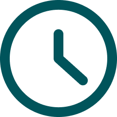

Kukaramákara
Rediseño web

Kukaramákara es un restaurante dominicano que necesita:
- Mejorar la experiencia del usuario al hacer pedidos online y;
- Reestructurar la información en su interfaz creando un flujo fácil y atractivo visualmente.
Equipo de 3 | 8 días | UX UI Designer
Proceso
Metodología
Herramientas
UX
- Competitive analysis
- Positioning map
- Lean survey canvas
- Surveys & interviews
- Sitemap
- DAFO
- User stories
- User journey
- Heuristic evaluation
UI
- Moodboard
- Lo-fi wireframing
- Visual benchmark
- Styleguide
- Mid-fi prototype
- Hi-fi prototype
Investigación
Entrevista al propietario
"He tenido malas experiencias con servicios de delivery y la comisión es muy alta"
"Manejo mi propia web, pero tengo poco tiempo y sé que pierdo clientes"
Survey
91%
De los encuestados prefieren pedir comida a domicilio vía online.
De los encuestados prefieren comprar directamente en la web/app del restaurante.
60%
Reseñas top
Mario | Local Guide
“Excelente atención, sabroso y abundante. Mi esposa dominicana salió satisfecha, yo comí chicharrones y estaban perfectos”

Ana | Local Guide
“Era la primera vez que iba, no sabía que era cada plato, pero nos lo explicaron todo y sus recomendaciones fueron un éxito”

Juan | Local Guide
“Buenísimo el picapollo, chicharrones, yuca y plátano frito deliciosos. Respetiré hasta probar el menú entero. Buen trato y precio”
User persona

Juliana, 40 años, dominicana

Me encanta ir al restaurante, pero hay veces que quisiera pedir a domicilio.
Quiero pagar online pero el sitio no tiene un método de pago habilitado y no sé cuánto tardarán en llegar.

Andrés, 32 años, español
Los nombres de los platos son llamativos y diferentes pero no se qué significan, necesito ver fotos y detalles.
Quisiera saber todos los ingredientes por cuestiones de alergias y gustos.
Definir e idear

Lo usuarios potenciales necesitan:
- Saber lo más pedido y valorado para tomar su decisión en base a recomendaciones.
- Visualizar un menú organizado para navegar facilmente entre categorías y poder filtrar.
- Disponer de fotos de los platos para hacer más fácil su elección y recordar pedidos in situ y/o pasados.
- Mirar todos los ingredientes y alérgenos de cada plato.
Propuesta
Rediseñar la web con el fin de potenciar los pedidos online y el atractivo visual, siempre teniendo en cuenta la accesibilidad y fluidez de navegación.


L O · F I
Los usuarios podrán ver fotografías e ingredientes de todos los platos. Y disponen de un sistema de filtros que contiene, entre otros, los alérgenos.
Guía de estilo
Paleta de colores
Tipografía
Roboto
A B C D E F G H I J K L M N Ñ O P Q R S T U V W X Y Z
A B C D E F G H I J K L M N Ñ O P Q R S T U V W X Y Z
Home
Antes

Después

Desafíos
Conocimientos y organización
Desafío
Al ser el segundo proyecto, no habíamos adquirido los conocimientos necesarios para trabajar bajo los mismos estándares. El nivel de conocimiento del equipo era variable y cada uno trabajaba de manera diferente.
Solución
Tras los primeros tropiezos y tras conocernos mejor, nos asignamos las tareas según nuestras fortalezas y debilidades. Y siempre que alguien tenía un problema lo resolvíamos juntos, agilizando el proceso.
Conclusión
Cuando un equipo de desconocidos no tiene el tiempo y los conocimientos suficientes, es inevitable arrastrar errores. Pero una vez, que se logra llegar a una organización y verdadero trabajo en equipo, es posible realizar un MVP acorde al tiempo establecido, teniendo en cuenta las futuras iteraciones.
No perder la identidad tradicional
Desafío
La relación estrecha entre lo nuevo y moderno nos detenía a la hora de aplicar los cambios en la web. Para el propietario era importante mantener la imagen de un negocio familiar de comida tradicional dominicana.
Solución
Mientras avanzamos en el proyecto, nos dimos cuenta de que las fotografías serían las protagonistas. Usamos fotografías que transmitan esa sensación de comida casera con emplatados acordes. Además creamos la sección ‘sobre nosotros’ para los usuarios que quieran conocer la esencia de Kukaramákara.
Conclusión
En un rediseño hay que aprovechar el feedback obtenido hasta el momento. Y para la mayoría de los usuarios de Kukaramákara, personas dominicanas, el recordar su país a través de la comida era muy importante. Nos enfocamos en esto, sin dejar de lado la necesidades del negocio y sugerencias del cliente.